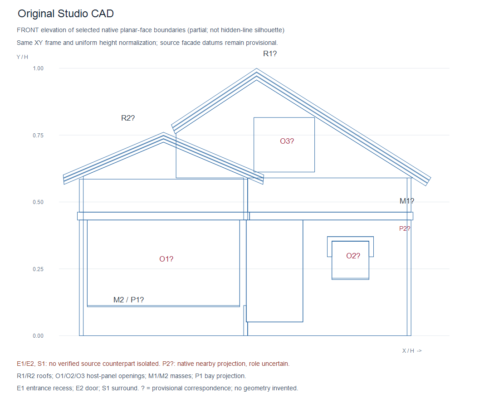
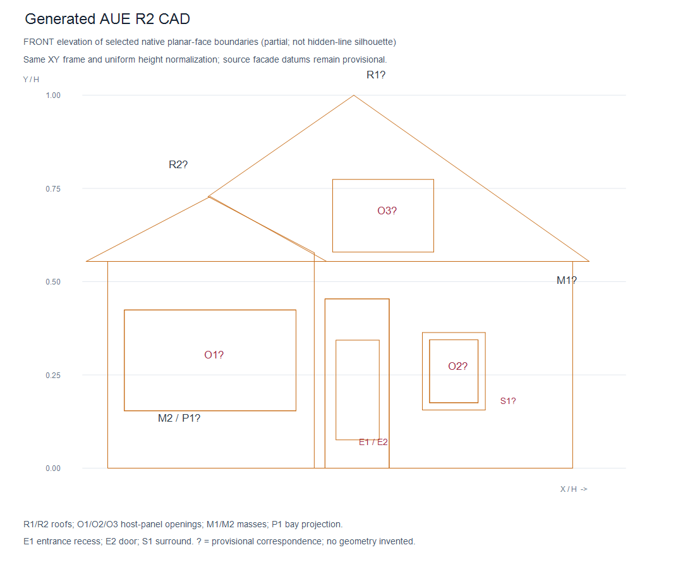
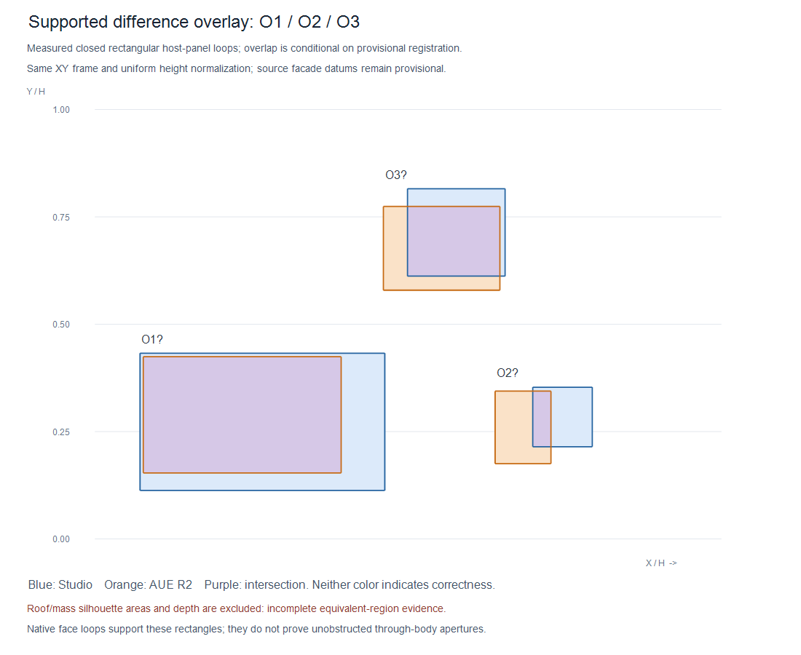

Neither model is ground truth. Same orientation, normalized architectural height and provisional XY frame. These are selected native face boundaries, not vertex-cloud silhouettes or complete hidden-line elevations. Every ? marks an unverified architectural correspondence. R2 stays unchanged at 180 mm.


